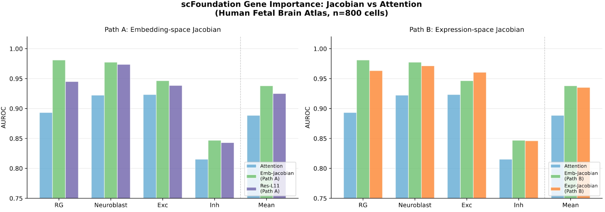
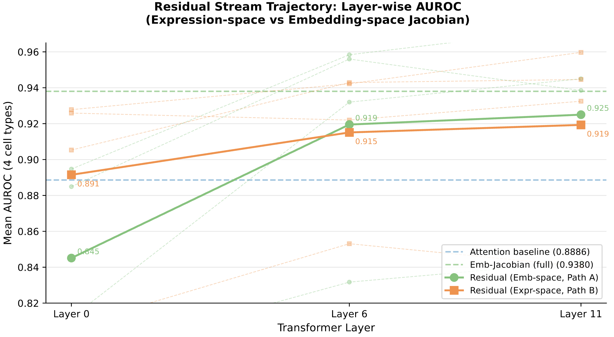
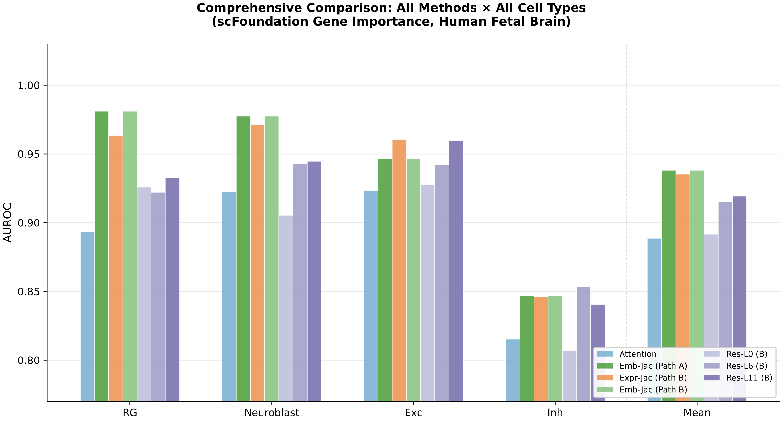
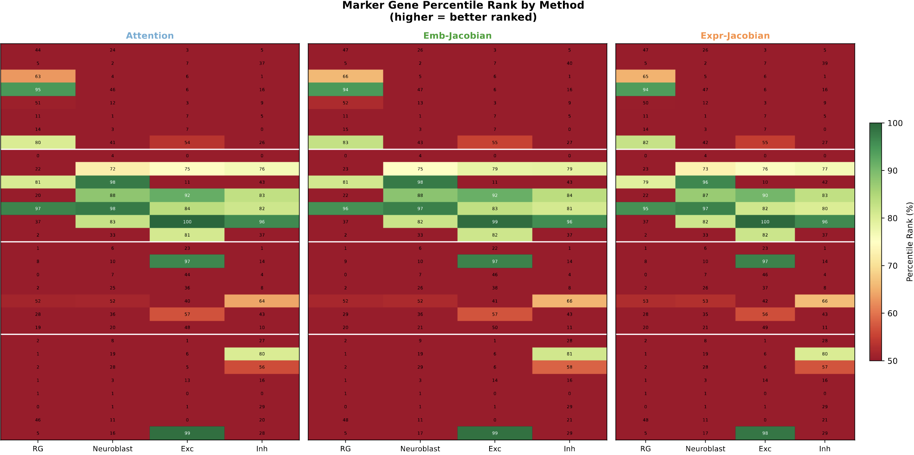
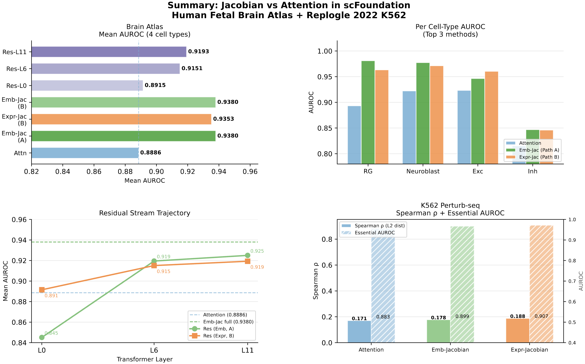

scFoundation Jacobian Analysis
Attention 기반 유전자 중요도 해석을 Jacobian으로 개선할 수 있는가?
모델: scFoundation (100M params, 19,264 gene vocab, 50M 단일세포 사전학습)
Background
- scFoundation 같은 트랜스포머 모델은 유전자 발현값을 토큰으로 처리
- 각 레이어에서 self-attention은 "이 유전자가 다른 유전자들에게 얼마나 주목하는가"를 계산
- 이 attention weight를 모든 레이어에서 합산하면 유전자별 중요도 점수가 됨.
- Attention 방식:
유전자 i → 다른 유전자들에게 주목 → attention weight 합산 → importance score- → 문제: Attention weight는 토큰 간 유사도(similarity)를 측정하는데, 발현량이 높고 다른 유전자와 자주 같이 나타나는 유전자가 높은 점수를 받게됨.
- NLP 분야에서도 "Attention is not Explanation"이라는 논제가 대두되어 이 부분을 다시 살펴볼 여지가 있음.
- Jacobian
- 편미분(partial derivative)
- 유전자 i의 발현을 ε만큼 바꿨을 때
→ 모델의 세포 임베딩이 얼마나 바뀌는가?
→ ∂(cell embedding) / ∂(gene_i expression)
- 구현 방식
- scFoundation의 토큰 임베딩(AutoDiscretizationEmbedding2)이 연속 발현값을 이산 bin으로 변환할 때 사용하는 in-place 텐서를 사용함.
- PyTorch autograd는 in-place 연산에서 gradient 추적을 포기하기 때문에 gradient chain이 끊기게 됨.
→ torch.where로 대체한 DifferentiableTokenEmb를 직접 구현해서 true expression-level
Jacobian을 복원
방법론 요약
| 방법 | 핵심 아이디어 |
|---|---|
| Embedding-space Jacobian | ∂‖cell_emb‖ / ∂x_init — 임베딩 공간 gradient |
| Expression-space Jacobian | ∂‖cell_emb‖ / ∂expression — 발현값 직접 gradient (DifferentiableTokenEmb 구현) |
| Perturb-seq 외부 검증 | Replogle 2022 K562 genome-wide KO와 Spearman ρ 비교 |
| Attention weight | 각 레이어 attention 합산 평균 |
AUROC
- 알려진 마스터 레귤레이터 유전자의 발현량과 activity ground truth로 복원 능력 AUROC 평가 (n=800 cells, 200/cell type)
| 방법 | RG | Neuroblast | Exc | Inh | Mean |
|---|---|---|---|---|---|
| Attention | 0.893 | 0.922 | 0.923 | 0.815 | 0.889 |
| Emb-Jacobian | 0.981 | 0.977 | 0.947 | 0.847 | 0.938 |
| Expr-Jacobian | 0.963 | 0.971 | 0.961 | 0.846 | 0.935 |
→ Jacobian이 모든 세포 유형에서 일관적으로 Attention을 상회 (+0.05 AUROC)
→ Emb-Jacobian이 Expr-Jacobian보다 소폭 우위 (Gradient×Input의 expression-level bias 없음)

Residual Stream Trajectory
- 레이어별 잔차
Δx_l = x_{l+1} - x_l에 대한 Jacobian AUROC 추이를 살펴봄
| Layer | Emb-Jac (Path A) | Expr-Jac (Path B) |
|---|---|---|
| L0 | 0.845 | 0.892 |
| L6 | 0.920 | 0.915 |
| L11 | 0.925 | 0.919 |
→ L0: Expr가 우위 — 초기 레이어는 발현값에 직접 반응, expression gradient가 더 민감
→ L11: Emb가 우위 — 깊은 레이어는 추상적 임베딩 공간에서 작동
→ 두 방법 모두 단조 증가 → Transformer 레이어가 생물학적 정보를 계층적으로 축적

Perturb-seq 데이터 사용해봄
- Replogle 2022 K562 genome-wide Perturb-seq, n=9,690 KO genes
| 방법 | Spearman ρ (L2) | Spearman ρ (#DEG) | Essential AUROC |
|---|---|---|---|
| Attention | 0.171 | 0.336 | 0.883 |
| Emb-Jacobian | 0.178 | 0.350 | 0.899 |
| Expr-Jacobian | 0.188 | 0.362 | 0.907 |
→ Expr-Jacobian이 KO 효과 예측에서 가장 우수
→ Essential gene 식별 AUROC 0.907 (random = 0.5) — 유의미한 신호
→ 전체 Spearman ρ ~0.18은 낮지만 p < 10⁻⁷⁰ (모델이 KO 예측용으로 학습되지 않았음을 감안)

Marker Gene rank 복원력

→ Jacobian 방법에서 자기 세포유형 마커(대각 블록)의 녹색(상위 순위) 비율이 Attention보다 높음
→ Inh 계열 마커는 전 방법에서 낮음 — 억제성 뉴런의 이질성(SST/PVALB/VIP 서브타입 혼재) 반영
전체 비교 요약

- Jacobian은 Attention보다 생물학적으로 의미있는 유전자 중요도를 계산한다고 보여짐.
- Attention은 token co-occurrence(상관관계)를 측정하는 반면, Jacobian은 인과적 민감도를 측정. 마스터 레귤레이터 복원 AUROC +5%p.
- Embedding-space Jacobian이 Expression-space보다 소폭 우위 (brain atlas)
- Gradient×Input은 발현량이 낮은 유전자를 불리하게 만드는 bias 존재. 발현량에 독립적인 임베딩 공간 gradient가 marker recovery에서 더 나은 신호.
- 레이어 깊이에 따라 정보가 계층적으로 축적된다
- L0 → L11 단조 증가. 초기 레이어(L0)는 발현 공간에서, 후기 레이어(L11)는 임베딩 공간에서 Jacobian이 더 강한 신호를 보임.